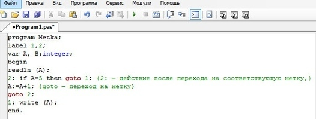
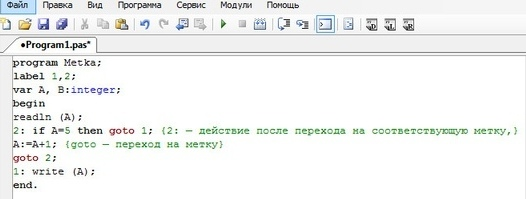

●Поговорим о упомянутой раньше метке. Эта процедура очень легка в использовании и позволяет при надобности перейти в любую часть программы, «перескочив» одну из следующих частей, или же наоборот, вернуться в предыдущую часть. Прописывается метка очень просто: сперва описываем метку в разделе меток, а затем указывается место перехода, а нужный оператор помечается меткой.
На данном примере, программа увеличивает на 1 введенное число, пока оно не станет равным пяти.
Часть 5. Процедуры и функции для управления
программой
 
